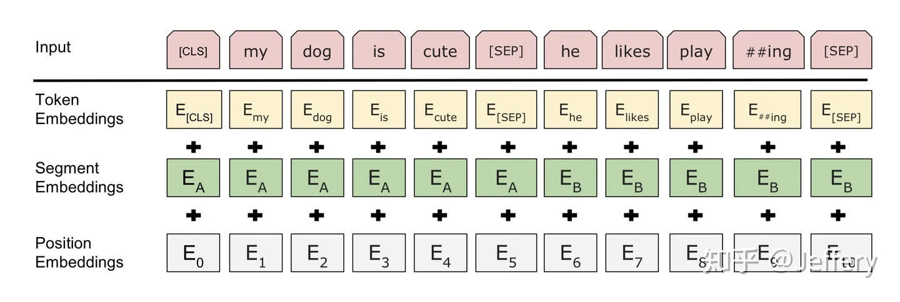
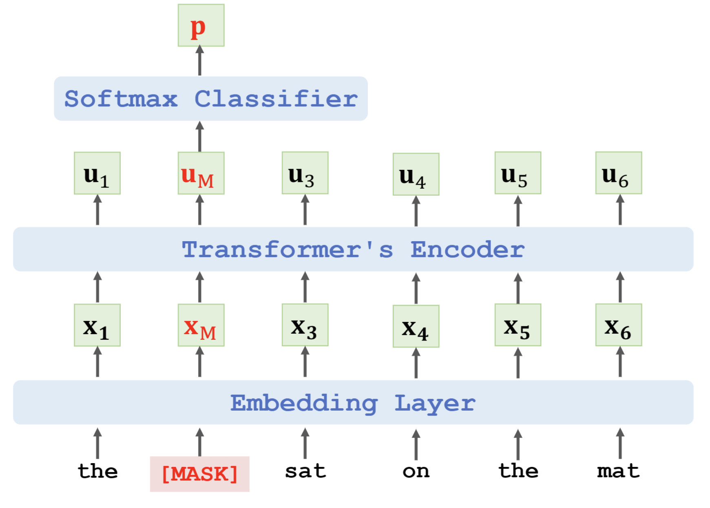
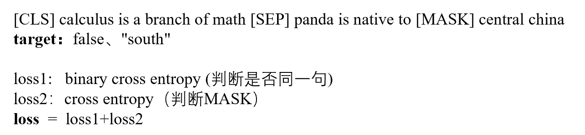

BERT的全称为Bidirectional Encoder Representation from Transformers，主要针对Transformer的Encoder部分进行预训练，包括以下两个部分：
- Masked Language Model：类似完形填空，预测被遮挡的单词
- Next Sentence Prediction：预测下一个句子
首先对输入的句子进行token化，具体操作如下图所示

Masked Language Model
BERT会以15%的概率随机地选中某个token位置，替换为[MASK]。假设输入为the cat sat on the mat，将cat进行mask。
经过Encoder层后得到特征向量$u_M$，根据attention的特性，$u_M$包括上下文信息，知道整句话的意思，因此将其输入至SoftMax分类器，得到概率分布p
最后，把预测的值和ground truth进行交叉熵计算loss，然后梯度下降更新模型参数
==注==：这里更新参数，包括Encoder层和Embedding层。因此，最后训练得到的Embedding层可以有效表示不同词向量之间的关联性
预训练的目标会令产生的语言表征对[MASK]敏感，但是却对其他token不敏感，因此BERT在替换时，采用以下策略
- 80%是[MASK]。my dog is hairy——>my dog is [MASK]
- 10%是随机的其他token。my dog is hairy——>my dog is apple
- 10%的是原来的token。my dog is hairy——>my dog is hairy
这种策略令BERT不再只对[MASK]敏感，而是对所有的token都敏感，以至能抽取出任何token的表征信息
Next Sentence Prediction
MLM任务倾向于抽取token层次的表征，因此不能直接获取句子层次的表征。因此BERT中加入NSP任务，预测两个句子是否连在一起
将两个句子通过[SEP]连接起来，如果是上下句，target为true
得到的特征向量c包括所有输入的信息，将其输入至二分类器中，与真实值对比，并进行参数更新
在训练时，常将MLM和NSP结合起来，如下所示。也可以加多个MASK或句子，对应的加多个loss
经过预训练后，BERT在每个位置上生成对应于输入标记的表示向量，可以理解为提取出了语义信息。这些表示向量可以被用于各种下游任务，如文本分类、命名实体识别等